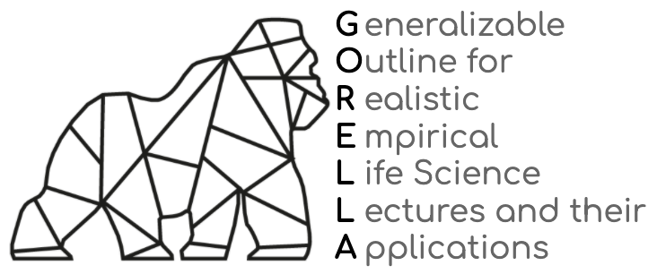

About the content of this Jupyter Book
This page is currently under construction and will be updated continiously. Please visit this page again in the next few weeks for further information.
Welcome¶
Hello everyone and welcome to the overview and documentation page for the GORELLA project, we’re glad to see you here! Within these pages, we would like to present and describe a framework for a “Generalizable Outline for Realistic Empirical Life Science Lectures and their Applications” or in short GORELLA.
GORELLA is not only a great abbreviation, hopefully it also reminds people that we need to do something now to save the Gorilla as a species (for more information please check out The International Gorilla Conservation Programme and World Gorilla Day for more information on how to get involved).
The 1-2-3 of all this is that we wanted to create a FAIR resource targeting the empirical training of students in a standardized, fair, open, and inclusive manner. Furthermore, GORELLA is designed to support interdisciplinarity and straightforward transfer and adaptation between scientific fields in the life sciences. We hope you find GORELLA useful and it’s set up comprehensive. If you have any questions, problems or feedback, please don’t hesitate to get in touch with us.
What’s all this now?¶
As you can see at the TOC on the left sidebar, there’s quite a bunch going on here. We know, we know: “Oh my, is all of this really necessary?”. Well, we think so and here’s why: creating structural changes in the empirical training of students via a complex framework needs time, effort, details, and dedication.
To increase openness and sustainability, and thus ultimately the success rate of projects, these things need to be prepared and supplied in a way that they are FAIR for as many people as possible. Therefore, we want to provide as much information as possible in a goal-oriented manner. We gave our best to condense the last five years of our lives to something y’all can make use and sense of. The result is the already mentioned TOC, which includes the following sections:
-
What’s the problem and how are we propose to solve it?
-
How are things implemented and supposed to work?
-
What are the specific topics and aspects taught?
Introduction & theory building
All things gotta start somewhere and scientific projects are no exception to that, but how?
-
How to obtain insights from data?
-
Where should the acquired knowledge to be disseminated?
-
What to do about outreach and discourse creation?
-
Making sure the work and progress of the participants is transparent and documented.
-
Was it worth it and how can this be evaluated?
-
Where are the materials?
-
Are there guidelines on how to start?
-
Necessities for creating an open, fair, safe and inclusive learning experience.
How to use this resource & its features¶
You can navigate through the respective sections via the TOC on the left side and within sections via the TOC on the right side.
The three symbols in the top allow to enable full screen mode, link to the underlying Github repository and allow you to download the walkthrough
as a pdf or markdown file respectively. Additionally, we support public reviews and comments through an hypothes.is plugin
with which you can interact on the right side. All of this awesomeness (talking about the infrastructure and resource) is possible through the dedicated and second to none work of the Jupyter community, specifically, the Executable/Jupyter Book and mybinder project.
The folks and their motivation¶
We are three people that were tired of the way the majority of empirical training of students is conducted. This entails José C. García Alanis, Peer Herholz, and Christoph Vogelbacher, all of whom coming from mixed background including psychology, neuroscience, data science and informatics. Over a time span of several years, we’ve step-wise increasing our efforts to improve the way empirical methods are communicated and taught. From the supervision of students over lectures to workshops and large scale initiatives, we tried our best to support and help students and make practical research more fair and accessible for everyone.
Through all these experiences and gathered feedback it become clear that something more is needed, something fundamentally different, a paradigm shift. Thus, we compiled everything into a framework that is build upon the ideas and principles of open, reproducible and inclusive science, making the entirety of materials available and easily adaptable for everyone interested. The result is the very thing you are currently reading. We sincerely hope that, if we all work together on this further, we can create and introduce a paradigm shift in education that mirrors current developments in science.
Can I provide feedback or help out?¶
We would highly appreciate and value every feedback, idea or question you might have. Please don’t hesitate a single second to get in touch with us. The same holds true for helping out and becoming an active part. In fact, if you want, you’re herewith a part of GORELLA. No one achieves anything alone and we all need to get active to change things for the better. The key is open and fair collaboration via basis democratic decision making, where everyone (no matter you degree, status or background) is equal. For further information, please consult our Code of Conduct.